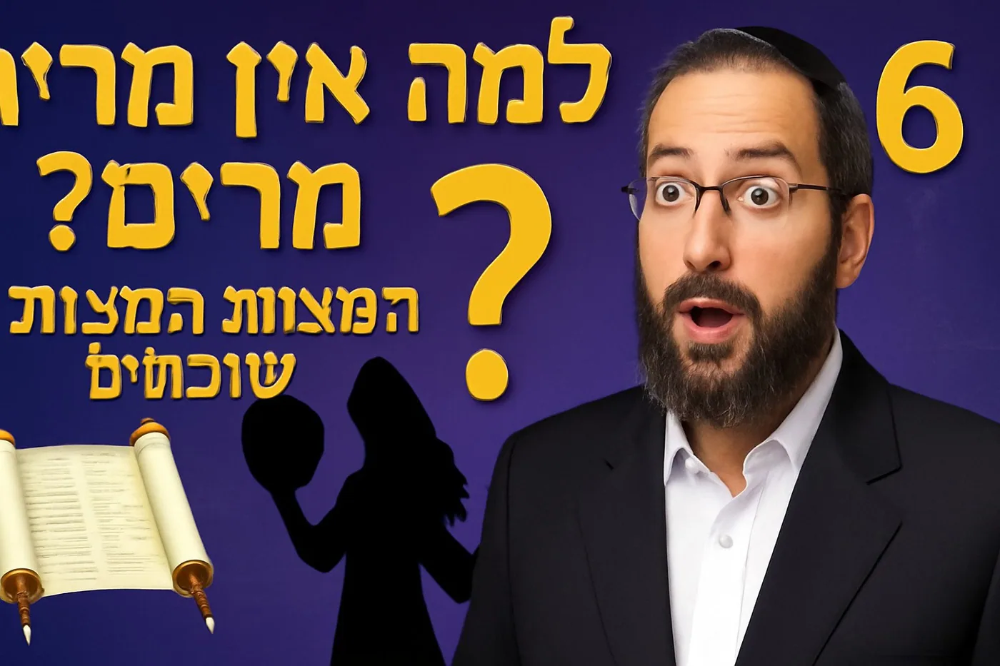

יש ביהדות שש זכירות מהתורה - אבל אחת מהן כמעט נעלמה מהתודעה היהודית. התורה מצווה עלינו במפורש: "זכור את אשר עשה השם אלוקך למרים בדרך בצאתכם ממצרים" - אבל מתי בפעם האחרונה זכרתם את זה?
למה לא עושים "שבת מרים"?
השאלה המרכזית: יש לנו פרשת זכור לעמלק - למה אין פרשת מרים? הרב יהודה טאוב מביא תשובה מפתיעה מהמגן אברהם: לא עושים שבתות עצובות ביהדות!חשבו על זה: פרשת זכור זה להרוג את עמלק, פרשת המן זה זכרון לנס, פרשת פרה אדומה זה טהרה - כולם דברים חיוביים. אבל מעשה מרים? זה זכרון לעונש, לצרעת, לדברת לשון הרע. לא נעים לעשות מזה שבת שמחה.
איך בכל זאת מקיימים את המצווה?
הרמבן מסביר: כשאנחנו קוראים את הפרשה בפרשת בהעלותך, אנחנו מקיימים את המצווה. צריך לכוון במיוחד לזכור את מעשה מרים - איך היא דיברה לשון הרע ונענשה בצרעת.
המחלוקת הגדולה: רמבם נגד רמבן
הרמבן אומר שזו מצוות עשה מהתורה - בדיוק כמו "זכור את יום השבת" או "זכור את אשר עשה לך עמלק".הרמבם לא מנה את זה בספר המצוות שלו! למה? כי לדעתו, זה רק פרט מתוך הכלל הגדול של "לא תלך רכיל". יש לנו איסור כללי על לשון הרע, וזכירת מרים זה רק דוגמה.
החידוש של החפץ חיים
החפץ חיים מחדש: כל מי שמדבר לשון הרע - מבטל מצוות עשה מהתורה! איך? כי אם היה זוכר את מעשה מרים, לא היה מדבר. השכחה שלו היא ביטול מצוות עשה.
הקשר המפתיע לברכת אהבת עולם
הארי"זל מחבר את זכירת מרים למילים "להודות לך" בברכת אהבת עולם: הפה נברא להודות, לא לדבר לשון הרע.
למה זה רלוונטי היום?
במציאות של רשתות חברתיות ולשון הרע דיגיטלית, זכירת מעשה מרים יותר רלוונטית מאי פעם. מרים הנביאה - אחותו של משה, המנהיגה, זו שהצילה את משה בתיבה - אפילו היא נענשה קשות על לשון הרע.זה מלמד אותנו שאין "דרגות" בלשון הרע - גם המנהיגים הגדולים ביותר צריכים לשמור על הלשון.
לצפייה בהסבר המלא עם כל המקורות והמחלוקות: [קישור לסרטון]ערוץ הרב יהודה טאוב: https://www.youtube.com/channel/UCtW9paDQ9Gq6aVmAfuu8Onw
ציטוטים מעוררי השראה מהשיעור
ציטוט 1 - על הסיבה שאין שבת מרים
"למה לא עושים פרשת מרים? כי לא נעים לתקן כזה דבר. כל השבתות שאנחנו עושים זה שבתות שמחות - לא עושים שבת עצובה"הרב יהודה טאוב | מגן אברהם#פרשתמרים #שבתותשמחות #מגןאברהם
ציטוט 2 - על גדולת העונש
"תן לעצמך דמיין - לא שעה אחת, שבעה ימים מחכים כולם! כולם שואלים למה לא זזים? כולם יודעים - מרים דיברה לשון הרע"הרב יהודה טאוב | חומרת הענישה#לשוןהרע #מריםהנביאה #עונשצרעת
ציטוט 3 - על החפץ חיים
"כל מי שמדבר לשון הרע - הוא מבטל את המצווה של לזכור מעשה מרים. אם היית זוכר, לא היית מדבר"הרב יהודה טאוב | החפץ חיים#חפץחיים #ביטולמצוותעשה #זכירתמרים
ציטוט 4 - על הזכירה בגמרא
"כמה זמן לוקח לאדם לשכוח? 12 חודש. נאמר 'נשכחתי כמת מלב' - כמה זמן לוקח לשכוח את המת? 12 חודש"הרב יהודה טאוב | זמן השכחה בגמרא#זמןשכחה #גמרא #12חודש
ציטוט 5 - על הארי"זל וברכת אהבת עולם
"כשאתה אומר 'להודות לך' בברכת אהבת עולם - כוון לזכירת מעשה מרים. איך? שהפה נברא להודות ולא לספר לשון הרע"הרב יהודה טאוב | האריזל#אריזל #ברכתאהבתעולם #להודותלך